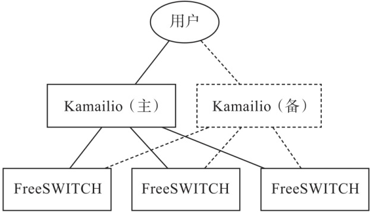
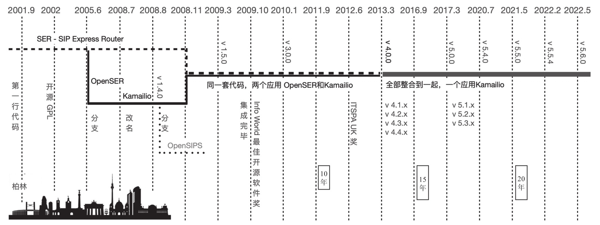

首页 > 编程笔记
Kamailio是什么？
Kamailio 是一个开源的 SIP 服务器，主要用作 SIP 代理服务器、注册服务器等，而 FreeSWITCH 是一个典型的 SIP B2BUA，主要用于 VoIP 媒体相关的处理。
在学习 FreeSWITCH 以及 SIP 的过程中，经常有人问我：
FreeSWITCH 只是一个应用场景，SIP 是面向运营商设计的协议，在实际的部署环境中比单纯的 FreeSWITCH 要复杂得多。当然并不是所有人都能接触到运营商的环境，不过，现在是开源主导的世界，通过学习 OpenSIPS 或 Kamailio，就可以更好地理解 SIP 了。
Kamailio 基于 GPLv2+ 开源协议发布，它可以支持每秒建立和释放成千上万次的呼叫（Call Attempt Per Second，CAPS），可用于构建大型的 VoIP 实时通信服务——音视频通信、状态呈现（Presence）、WebRTC、实时消息等；也可以构建易扩容的 SIP-to-PSTN 网关、IP-PBX 系统，以及连接 Asterisk、FreeSWITCH、SEMS 等。
Kamailio 具有如下特性：
Kamailio 从 2001 年开始开发，至今也有 20 余年的历史了。
Kamailio 的读法是 Kah-Mah-Illie-Oh，或简单一点，Ka-Ma-ili-o，或 Kama-ilio，谷歌翻译成“卡迈里奥”，但笔者觉得翻译成“卡马伊里奥”或简称“卡马”更为合适。
Kamailio 与 FreeSWITCH 配合使用最常用的场景是 Kamailio 作为注册服务器和呼叫负载均衡服务器（一般主备配置），FreeSWITCH 进行媒体相关的处理（如转码、放音、录音、呼叫排队等），如图1所示。
简单总结一下，Kamailio 是一个：
相对而言，Kamailio 不是：
它有以下特性：
但它不做以下事情：
SER 项目的全称是 SIP Express Router，最早是由位于德国柏林的 FhG FOKUS 研究所开发的，并以 GPL 协议发布。核心研发人员有 Andrei Pelinescu-Onciul、Bogdan-Andrei Iancu、Daniel-Constantin Mierla、Jan Janak 以及 Jiri Kuthan。
2004 年 FhG FOKUS 在 SER 的基础上启动了一个新项目 IPtel（iptel. org），次年该项目的商业部分卖给了 Tekelec，核心开发团队中部分成员去了 iptel.org，而 Bogdan 和 Daniel 离开 FhG FOKUS 创建了一家新的公司 Voice-System，并开始维护开源版本的 SER——OpenSER。
后来，OpenSER 分出两个项目，一个是 Kamailio，另一个是 OpenSIPS。
再后来，Kamailio 与 OpenSER 项目合并，这使得 Kamailio 看起来更“正宗”一些。不管怎样，两者最初的代码都是一样的，但由于思路和方向不同，后来的版本差异就比较大了。
下面是 Kamailio 的发展简史。
Kamailio 简史如图2所示。
SIP 最早发布于 1999 年 3 月，后来在 2002 年 6 月又发布了一个新的标准 RFC 3261。
除此之外，还有大量相关的或是在 SIP 基础上扩展出来的 RFC，如关于 SDP 的 RFC 4566、关于会议的 RFC 4579 等。
关于 SIP，笔者找到对 Henning Schulzrinne 教授的一段采访。采访中他回忆了 SIP 协议的诞生过程。
我最开始对音频和视频编码产生兴趣，是因为我的硕士论文与此有关。那时候 PC 声卡还没有广泛用于真正的音频采集，所以我只能在一台 PDP-11/44 迷你计算机上使用 A/D 转换器对信息进行转换。
后来互联网和早期的 SUN 工作站（如SPARC）可以传输实时音视频了，我开始致力于开发和标准化用于在互联网上传输音视频的协议，如 RTP 和 SIP。移动设备的广泛使用造就了“无处不在的系统”，包括现在广为人知的 IoT。
我当时正在致力于一个被称为 DARTnet 的博士科研项目，这个项目可以在一个试验性的叠加网络中传输音频和视频，该网络当时使用了一个新的协议——ST-II（现在已弃用）。网络节点是早期可以实现网络路由器和叠加网络的 SPARC 工作站（来自SUN公司），这个系统需要配合相关工具和协议才能运行。
我开始积极投入到音视频的各种技术工作中——从创造传输语音和视频的协议到开发支持流畅播放的算法。当时 IETF 为了支持组播骨干网（一种早期可以向千百个观众传输音视频的技术），开始开发所需协议，我也参与其中。这些工作促成了 RTP 的开发工作。
RTP 最初是针对组播设计的，后来被用于大多数“基于标准”的音视频传输，而不只限于组播。随着这项工作不断成熟，包括我在内参与这项工作的很多人认为，需要更好的方法来启动音视频会话，SIP 因此诞生了。
当时没人在意我们这个小组的研究，因为“真正的”电信工程师们正在研究时分复用电路交换机，而 SIP 是基于 IP 交换的。这反而成了我们的优势，没有人来指手画脚，我们的研究进程也较快。随着有线和无线行业开始认识到需要转入 IP 网络，SIP 所需的底层协议标准实际上已经准备就绪了。
在学习 FreeSWITCH 以及 SIP 的过程中，经常有人问我：
SIP 消息中那么多头域和参数，都是干什么用的？有些头域我从来也没有用过，是否真正有用？
我的回答是肯定的。FreeSWITCH 只是一个应用场景，SIP 是面向运营商设计的协议，在实际的部署环境中比单纯的 FreeSWITCH 要复杂得多。当然并不是所有人都能接触到运营商的环境，不过，现在是开源主导的世界，通过学习 OpenSIPS 或 Kamailio，就可以更好地理解 SIP 了。
什么是Kamailio
Kamailio 主要处理 SIP，因此了解 SIP 对更快地学习 Kamailio 有很大帮助，而学好 Kamailio 又有助于进一步了解 SIP，两者相辅相成。Kamailio 基于 GPLv2+ 开源协议发布，它可以支持每秒建立和释放成千上万次的呼叫（Call Attempt Per Second，CAPS），可用于构建大型的 VoIP 实时通信服务——音视频通信、状态呈现（Presence）、WebRTC、实时消息等；也可以构建易扩容的 SIP-to-PSTN 网关、IP-PBX 系统，以及连接 Asterisk、FreeSWITCH、SEMS 等。
Kamailio 具有如下特性：
- 支持异步的 TCP、UDP、SCTP、TLS、WebSocket。
- 支持 WebRTC，支持 IPv4 和 IPv6。
- 支持 IM 消息及状态呈现。
- 支持 XCAP 和 MSRP Relay。
- 支持异步操作。
- 支持 VoLTE 相关的 IMS 扩展。
- 支持 ENUM、DID 以及 LCR 路由。
- 支持负载均衡、主备用路由（Fail-Over）。
- 支持 AAA（记账、鉴权和授权）。
- 支持很多 SQL 和 NoSQL 数据库后端，如 MySQL、PostgreSQL、Oracle、Radius、LDAP、Redis、Cassandra、MongoDB、Memcached 等。
- 支持消息队列，如 RabbitMQ、Kafka、NATS 等。
- 支持 JSON-RPC、XML-RPC 控制协议以及 SNMP 监控。
Kamailio 从 2001 年开始开发，至今也有 20 余年的历史了。
Kamailio 的读法是 Kah-Mah-Illie-Oh，或简单一点，Ka-Ma-ili-o，或 Kama-ilio，谷歌翻译成“卡迈里奥”，但笔者觉得翻译成“卡马伊里奥”或简称“卡马”更为合适。
Kamailio 与 FreeSWITCH 配合使用最常用的场景是 Kamailio 作为注册服务器和呼叫负载均衡服务器（一般主备配置），FreeSWITCH 进行媒体相关的处理（如转码、放音、录音、呼叫排队等），如图1所示。

图1：Kamailio 与 FreeSWITCH 配合使用
图1：Kamailio 与 FreeSWITCH 配合使用
简单总结一下，Kamailio 是一个：
- SIP服务器（SIP Server）
- SIP代理服务器（SIP Proxy Server）
- SIP注册服务器（SIP Registrar Server）
- SIP地址查询服务器（SIP Location Server）
- SIP重定向服务器（SIP Redirection Server）
- SIP应用服务器（SIP Application Server）
- SIP负载均衡服务器（SIP Load balance Server）
- SIP WebSocket 服务器（SIP WebSocket Server）
- SIP SBC 服务器（SIP SBC Server）
相对而言，Kamailio 不是：
- SIP软电话（SIP Phone）
- 媒体服务器（Media Server）
- 背靠背用户代理（Back-to-Back UA，B2BUA）
它有以下特性：
- 快
- 可靠
- 灵活
但它不做以下事情：
- 发起通话；
- 应答通话；
- 做音、视频等媒体处理。
Kamailio 诞生背景
Kamailio 起源于一个研究项目——SER。SER 项目的全称是 SIP Express Router，最早是由位于德国柏林的 FhG FOKUS 研究所开发的，并以 GPL 协议发布。核心研发人员有 Andrei Pelinescu-Onciul、Bogdan-Andrei Iancu、Daniel-Constantin Mierla、Jan Janak 以及 Jiri Kuthan。
2004 年 FhG FOKUS 在 SER 的基础上启动了一个新项目 IPtel（iptel. org），次年该项目的商业部分卖给了 Tekelec，核心开发团队中部分成员去了 iptel.org，而 Bogdan 和 Daniel 离开 FhG FOKUS 创建了一家新的公司 Voice-System，并开始维护开源版本的 SER——OpenSER。
后来，OpenSER 分出两个项目，一个是 Kamailio，另一个是 OpenSIPS。
再后来，Kamailio 与 OpenSER 项目合并，这使得 Kamailio 看起来更“正宗”一些。不管怎样，两者最初的代码都是一样的，但由于思路和方向不同，后来的版本差异就比较大了。
下面是 Kamailio 的发展简史。
- 2001 年 9 月，SER 项目，Andrei Pelinescu-Onciul 在德国 FhG FOKUS 研究所写下第一行代码。
- 2005 年 6 月，分离为 SER 与 OpenSER 两个项目。
- 2008 年 8 月，OpenSER 分为 Kamailio 与 OpenSIPS，首个 Kamailio 版本是 1.4.0。
- 2008 年 11 月，OpenSER 与 Kamailio 代码合并，两者的模块可以通用，但分为不同的模块目录。
- 2009 年 3 月，发布 Kamailio v1.5.0，这是代码合并后的第一个大版本，该版本引入了很多新特性。
- 2013 年 3 月，发布 Kamailio v4.0.0，彻底整合了 OpenSER 的模块，使用同一个模块目录。
- 2017 年 2 月，发布 Kamailio v5.0.0，增加了 KEMI 支持，移除了 MI 控制接口，将相关功能统一到 RPC 管理接口。
- 2017 年 12 月，发布 Kamailio v5.1.0，增强了 KEMI 支持，增加了 sipdump 等 9 个新模块。
- 2018 年 11 月，发布 Kamailio v5.2.0，继续增强 KEMI 支持，增强了 dispatcher 模块，支持 rtpengine 转码功能，增加了 acc_json 等 6 个新模块。
- 2019 年 11 月，发布 Kamailio v5.3.0，继续增强 KEMI 支持，增强 dispatcher 模块，支持 HAProxy 协议，增加了 rtp_media_server 等 6 个新模块。
- 2020 年 7 月，发布 Kamailio v5.4.0，继续增强 KEMI 支持，支持 STIR/SHAKEN，增加了 JSON 格式日志支持，增加了 secsipid、kafka 等 5 个新模块。
- 2021 年 5 月 5 日，发布 Kamailio v5.5.0，继续增强 KEMI 支持，增加 rtpengine 的 Websocket 控制接口支持，增加 jwt 等6个新模块。
- 2022 年 2 月 27 日，发布 Kamailio v5.5.4，本文开始写作时最新的版本，包含一些缺陷更新。
- 2022 年 5 月，发布 Kamailio v5.6.0，本文截稿时，该版本已冻结更新并准备发布，完整的特性列表尚未公布。当你看到本文时，相信该版本就已经发布了。
Kamailio 简史如图2所示。

图2：Kamailio 简史
图2：Kamailio 简史
SIP 简介
SIP（Session Initiation Protocol，会话初始协议）是一个控制发起、修改和终结交互式多媒体会话的信令协议。它是由 IETF（Internet Engineering Task Force，Internet 工程任务组）在 RFC 2543 中定义的。SIP 最早发布于 1999 年 3 月，后来在 2002 年 6 月又发布了一个新的标准 RFC 3261。
除此之外，还有大量相关的或是在 SIP 基础上扩展出来的 RFC，如关于 SDP 的 RFC 4566、关于会议的 RFC 4579 等。
关于 SIP，笔者找到对 Henning Schulzrinne 教授的一段采访。采访中他回忆了 SIP 协议的诞生过程。
我最开始对音频和视频编码产生兴趣，是因为我的硕士论文与此有关。那时候 PC 声卡还没有广泛用于真正的音频采集，所以我只能在一台 PDP-11/44 迷你计算机上使用 A/D 转换器对信息进行转换。
后来互联网和早期的 SUN 工作站（如SPARC）可以传输实时音视频了，我开始致力于开发和标准化用于在互联网上传输音视频的协议，如 RTP 和 SIP。移动设备的广泛使用造就了“无处不在的系统”，包括现在广为人知的 IoT。
我当时正在致力于一个被称为 DARTnet 的博士科研项目，这个项目可以在一个试验性的叠加网络中传输音频和视频，该网络当时使用了一个新的协议——ST-II（现在已弃用）。网络节点是早期可以实现网络路由器和叠加网络的 SPARC 工作站（来自SUN公司），这个系统需要配合相关工具和协议才能运行。
我开始积极投入到音视频的各种技术工作中——从创造传输语音和视频的协议到开发支持流畅播放的算法。当时 IETF 为了支持组播骨干网（一种早期可以向千百个观众传输音视频的技术），开始开发所需协议，我也参与其中。这些工作促成了 RTP 的开发工作。
RTP 最初是针对组播设计的，后来被用于大多数“基于标准”的音视频传输，而不只限于组播。随着这项工作不断成熟，包括我在内参与这项工作的很多人认为，需要更好的方法来启动音视频会话，SIP 因此诞生了。
当时没人在意我们这个小组的研究，因为“真正的”电信工程师们正在研究时分复用电路交换机，而 SIP 是基于 IP 交换的。这反而成了我们的优势，没有人来指手画脚，我们的研究进程也较快。随着有线和无线行业开始认识到需要转入 IP 网络，SIP 所需的底层协议标准实际上已经准备就绪了。
关注公众号「站长严长生」，在手机上阅读所有教程，随时随地都能学习。内含一款搜索神器，免费下载全网书籍和视频。

微信扫码关注公众号